← Projects · 2023–2026
Dashboards
Power BI reporting for a research lab, a graduate program and a client in Peru
Three interactive reports, each built for a different audience: a humanitarian logistics research lab, a graduate program in civil engineering, and a social-media client. The screenshots below are exported from the reports; select any of them to open it at full size.
Hands — research lab dashboard
Hands (Humanitarian Assistance and Needs for Disasters) lab · PUC-Rio · 2023–present
A panel that summarizes the lab's activity in three areas: practice (development projects by funder), education (the lab's humanitarian logistics courses, from graduate level to an open online course) and research. The cover page is trilingual (Portuguese, English and Spanish), each page can be filtered by year, and every indicator links to the table behind it.
The research page counts 20 research projects, 30 theses and dissertations, 40 journal articles, 69 conference papers and 15 books and chapters, broken down by funder, venue and publisher.

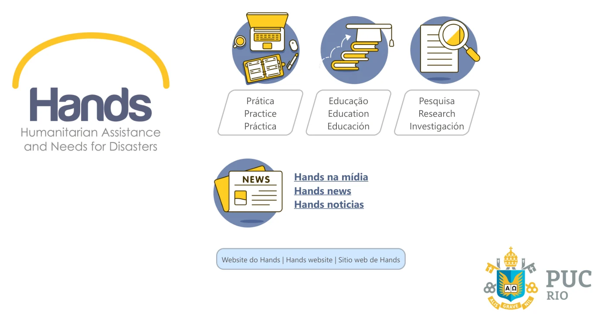

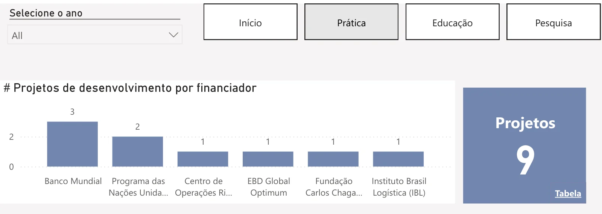

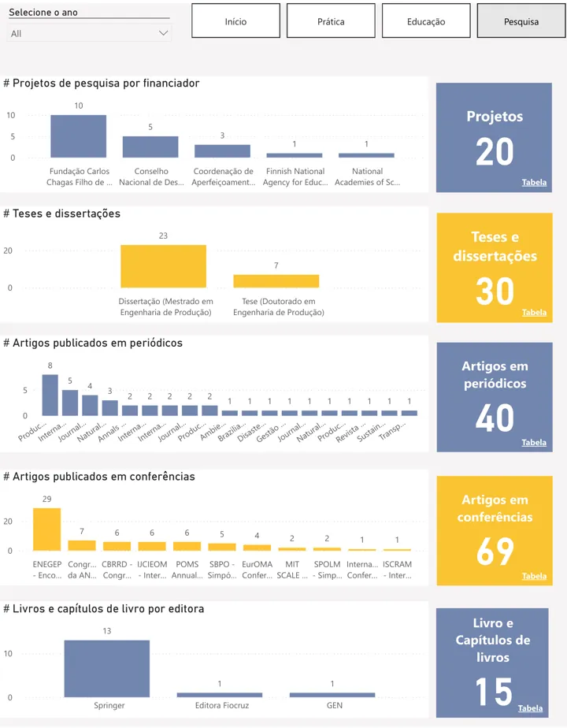

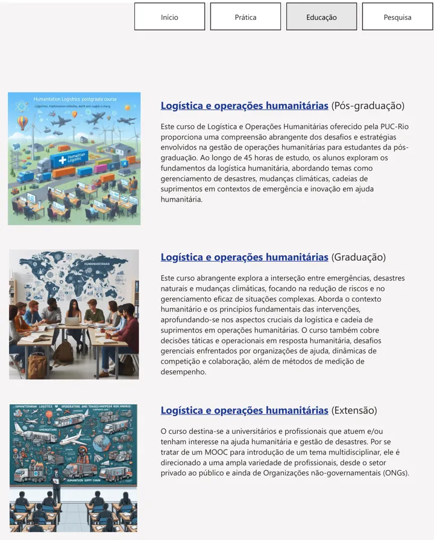
DEC PUC-Rio — graduate program monitoring
Graduate Program in Civil Engineering · PUC-Rio · 2025–2026
A 14-page report for the graduate program in Civil Engineering at PUC-Rio. It brings together students and alumni (profile, prior education, time to degree and supervision), research projects and scientific production: journal articles by Qualis classification, conference papers, books and technical products, each split by research line, student participation and national or international collaboration. The production pages compare each indicator with its yearly target for 2025–2028.
Faculty names are replaced with neutral labels (Docente A, B, …) in these screenshots.


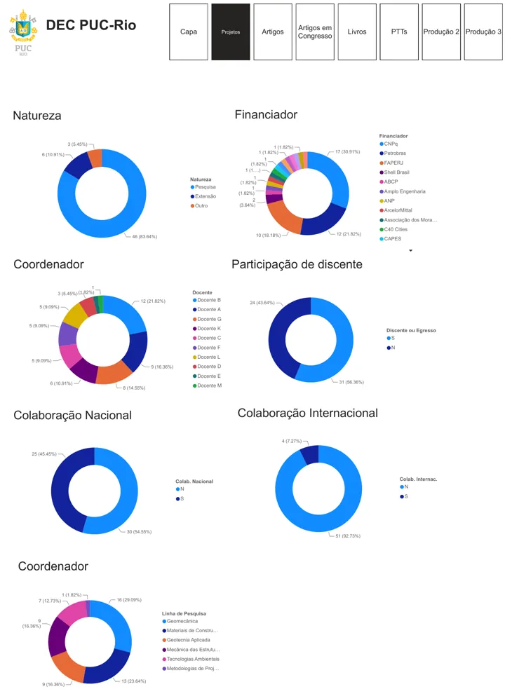

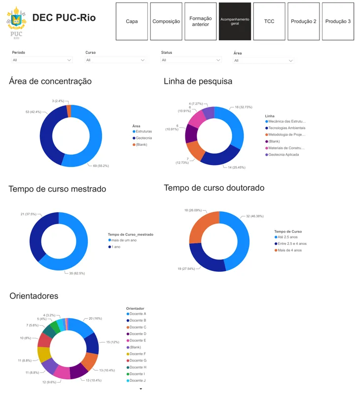

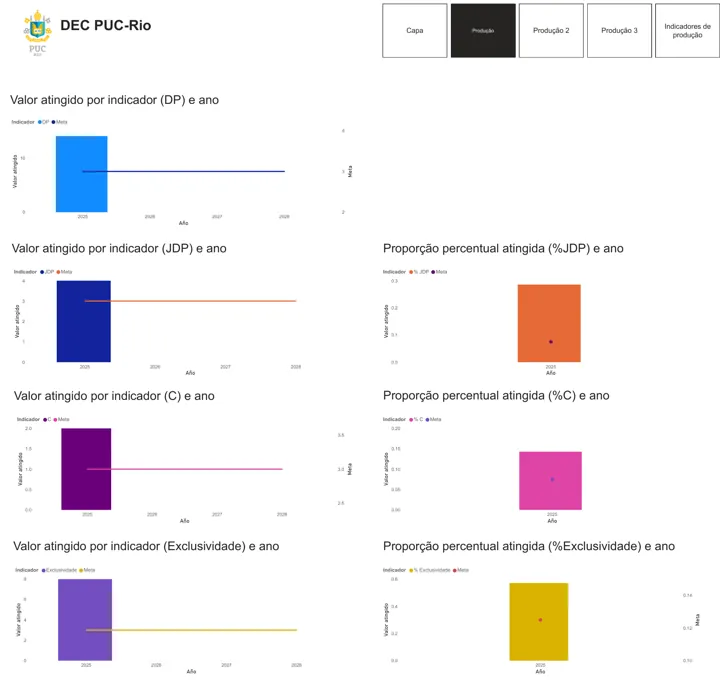
Covering Perú & Maral — social media analytics
Freelance · Peru · 2024–2025
A monthly report of LinkedIn and Instagram performance. A month selector shows reach, impressions, interactions by type, engagement rate, follower growth and the best-performing posts; the consolidated pages track the same measures month by month (October 2024 to February 2025), split by content type (stories, posts and reels) and by followers versus non-followers.
LinkedIn
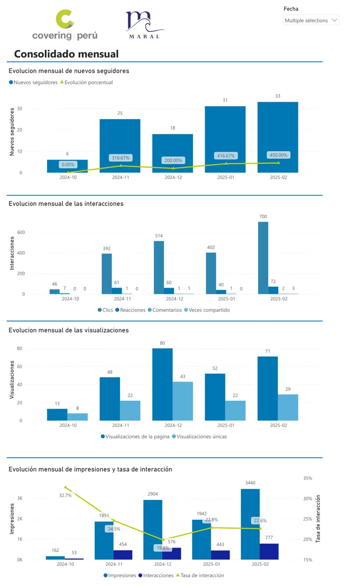
Instagram
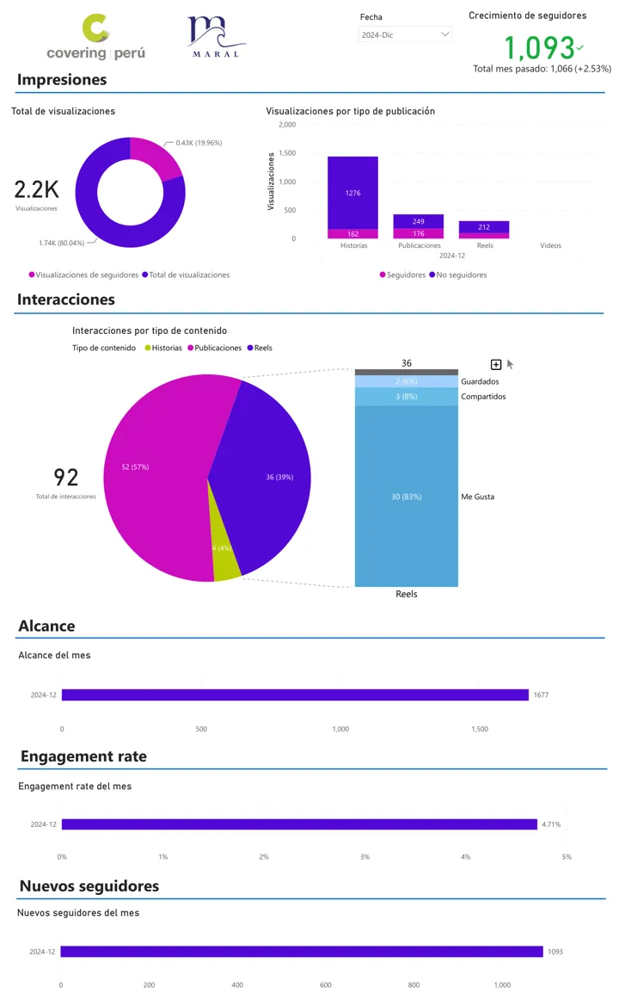
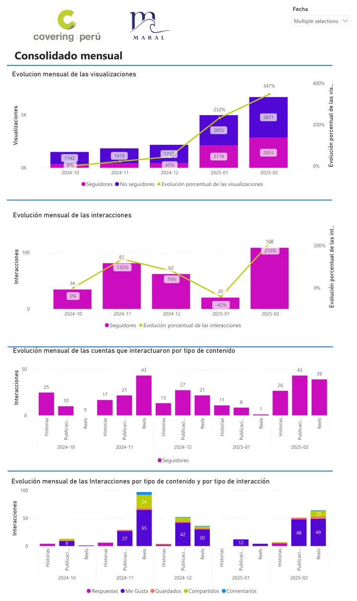
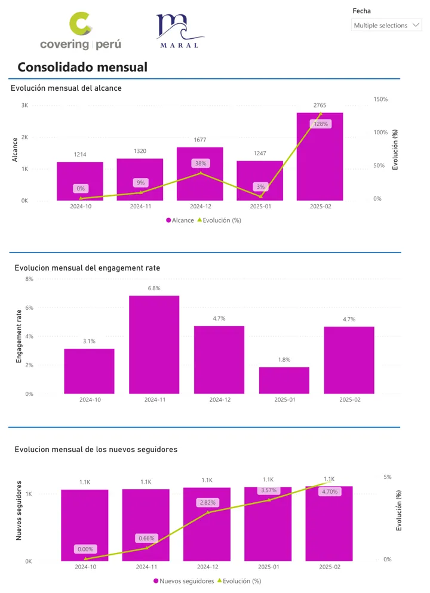